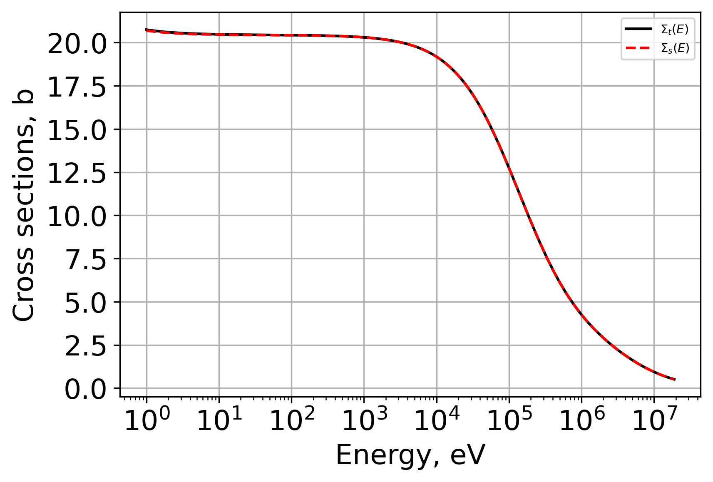
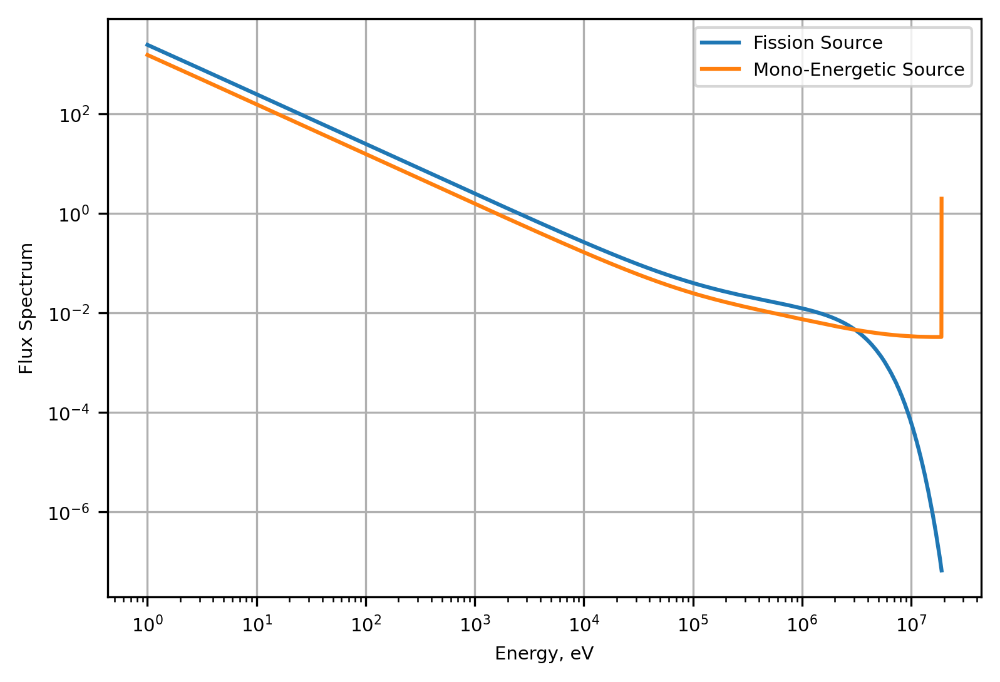
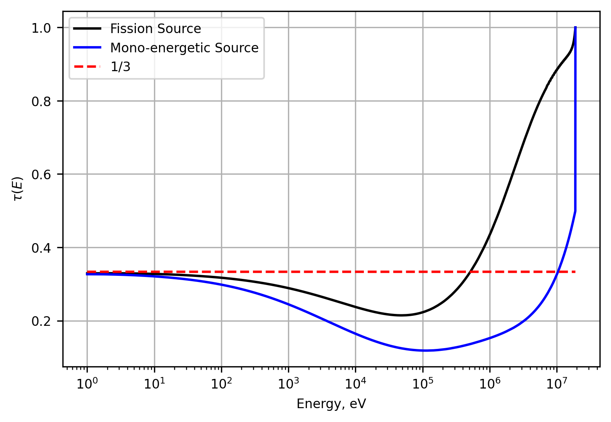
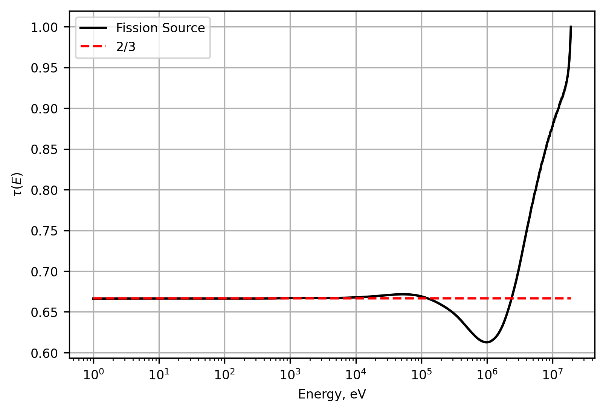
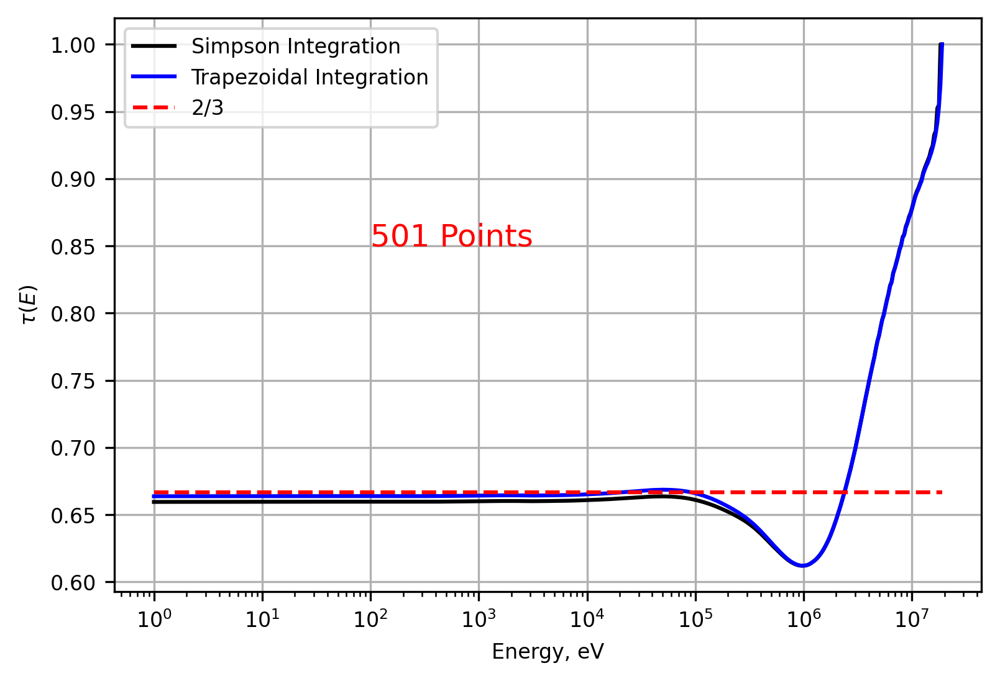
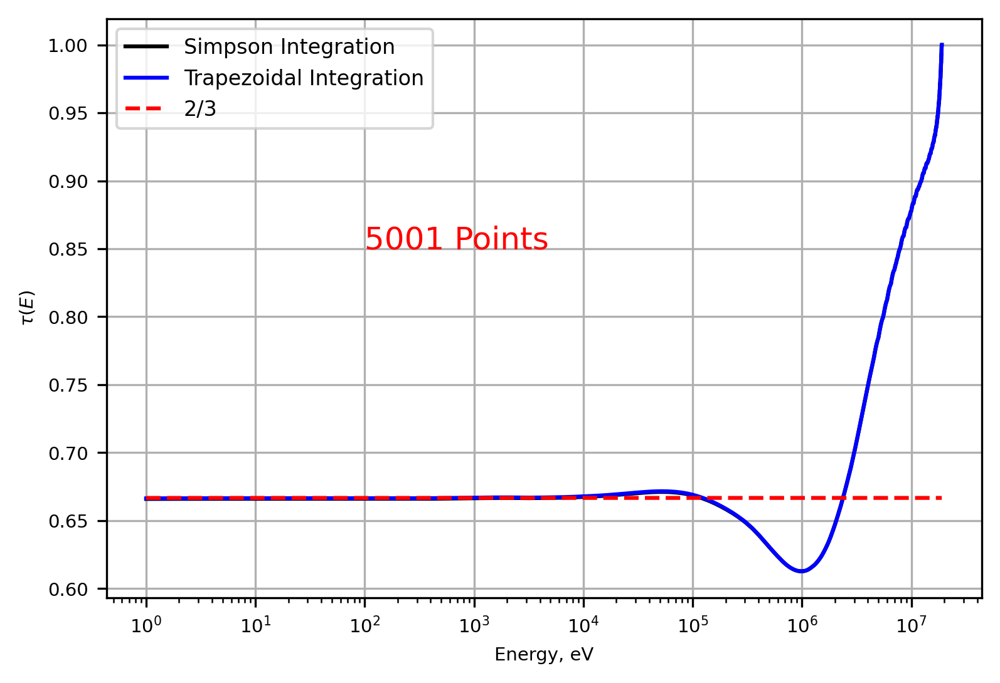

Transport Correction Ratio
Introduction
A transport correction ratio allows for one to determine the transport cross section \(\Sigma_{tr}(\mathbf{r},E)\) as a function of the correction ratio, \(\tau(\mathbf{r},E)\) and the total macroscopic cross section, \(\Sigma_{t}(\mathbf{r},E)\).
The transport correction ratio (TCR) is given by
where the differential scattering angle is given by
and \(\alpha\) is
This formulation assumes an infinite homogeneous medium were neutron absorption is neglected. To solve this set of equations, one must first calculate the infinite flux spectrum given energy dependent cross section data and a known source.
Using slowing down theory, the neutron flux spectrum can be derived from
The objective is to calculate various flux spectrum and TCR and observe the differing results based on the source used, the isotope considered, and numerical methods employed.
For reference, a sample of work completed using the functions described below is contained in the Jupyter Notebook:
Methodology
The python script transportcorrection.py was modified to accomplish the following goals:
Perform a comparison of TCRs developed for H-1 energy dependent cross sections using both a fission spectrum source and a mono-energetic source.
Investigate the TCR for H-2 given a fission spectrum source.
Change numerical integration schemes and identify performance differences.
Source Comparisons
To accomodate for the mono-energetic source, changes were made to the energyInterpolation function. A check was implemented to identify the user defined mono-energetic source and then the non-zero energy index was placed in the nearest fine energy structure bin. A sample of the function change is provided.
# Check if src is mono-energetic
nonzero_indices = np.nonzero(src)[0]
if len(nonzero_indices) == 1:
idx = nonzero_indices[0] # get index of the source
mono_energy = energy[idx]
mono_value = src[idx]
# Initialize new source as zeros
src1 = np.zeros_like(energy_new)
# Find closest index in energy_new to mono_energy
closest_idx = np.abs(energy_new - mono_energy).argmin()
# Assign mono_value to closest bin
src1[closest_idx] = mono_value
The mono-energetic source tested was set at \(E_{max}\) to correspond to the maximum energy used in the fine energy structure. With this mono-energetic source, the fission spectrum source, and H-1 cross section data, the infinite flux spectrums and the TCRs were developed.
Isotope Mass A>1 (H-2)
When H-1 is used for flux calculations, the term \(\alpha\) is zero. This simplified the expressions for infinite flux and TCR. However, for isotopes with mass A>1, we must retain \(\alpha\).
Furthermore, the amount of energy a neutron loses in an elastic collision with isotopes other than H-1 is limited by \(\alpha E'\). Therefore, a maximum neutron energy that is capable of down-scattering into the energy of concern was defined.
This was accomplished by modifying the function InfFlux to receive the isotope mass, A, as an argument. After checking A>1, a maximum energy capable of contributing to the flux in each energy i (signified by rows) is found which then limits the j energies (columns) to iterate over.
The logic begins with determining the maximum energy for each row i and then finding the applicable columns j that can contribute to the infinite flux.
E_max = energy[i] / alpha # maximum energy to downscatter from contributing to row i
# Find indices j >= i (not considering upscatter) where energy[j] <= E_max
downscatter_indices = np.where(energy[i:] <= E_max)[0]
j_end = i + downscatter_indices[-1] # index of highest energy j
# Define slice of contributing energy range
E_slice = energy[i:j_end + 1]
sigS_slice = sigS[i:j_end + 1]
dE = np.diff(E_slice)
n_intervals = len(dE)
Using this control structure, the upperbound of the infinite flux calculation is enforced. Accounting for \(E_{max}\) in the TCR calculation is handled in a similar manner. One additional step is needed to include the flux spectrum such that \(\phi(E')\rightarrow\phi(E(i)<E(j) \le E_{max,i})\).
Numerical Integration Changes
A Simpson’s 1/3 Rule integration technique is applied by taking the general technique, given by:
The coefficients of the function evaluated at each point represent the weighting factors of the kernel. Each index k represents a sliding window in row i which takes three points from the j columns. The step length factor, h, is taken as half the difference between the two endpoints in the three-point sliding window. This helps to prevent errors introduced due to irregularly spaced energy grids but also increases the number of calculations necessary since each integration step updates the weighting factor. For each three-point window, a local step length is calculated. This sliding three-point window is applied for all j columns that satisfy \(\phi(E')\rightarrow\phi(E(i)<E(j) \le E_{max,i})\).
An example for the three-point window Simpson’s integration is given as:
for j in range(0, n_slice - 2, 2): # chunk energy points in sets of three
E0, E1, E2 = E_slice[j:j+3]
f0, f1, f2 = flx_slice[j:j+3]
idx0, idx1, idx2 = i + j, i + j + 1, i + j + 2 # move through columns while ignoring up-scatter
h = (E2 - E0) / 2 # Locally calculated step length for each three point window
# Calculate matrix A values using sliced inputs for each of the three points
mtxA[i, idx0] += (h/3) * f0 * (0.5 * ((A + 1) * (energy[i] / E0)**0.5 - (A - 1) * (E0 / energy[i])**0.5)) / (flx[i] * (1 - alpha) * E0)
mtxA[i, idx1] += (h/3) * 4 * f1 * (0.5 * ((A + 1) * (energy[i] / E1)**0.5 - (A - 1) * (E1 / energy[i])**0.5)) / (flx[i] * (1 - alpha) * E1)
mtxA[i, idx2] += (h/3) * f2 * (0.5 * ((A + 1) * (energy[i] / E2)**0.5 - (A - 1) * (E2 / energy[i])**0.5)) / (flx[i] * (1 - alpha) * E2)
Results
Mono-energetic Source
Hydrogen-1 (H-1) cross section data is provided below. This data supports an assumption that that absorption cross section data is ignored, and that scattering and total cross sections are approximately equal.
{kind=link}
The flux spectrum from both the fission source and the mono-energetic source are shown below. This plot assumes an infinite homogeneous medium of H-1 for the flux calculations. The mono-energetic source is identifiable at the highest energy.
{kind=link}
The TCR is found by matrix inversion for both the fission source flux spectrum and the mono-energetic source flux spectrum to yield the TCR figure below. Both converge to the expected \(\tau_{0}=1/3\) as E→0. The mono-energetic source produces a rapid decrease and large undershoot at higher energies. The sharp change in TCR is due to the rapidly changing flux spectrum.
{kind=link}
H-2 TCR
The scattering and total macroscopic cross section data used in calculating the flux spectrum and TCR for H-2 is provided below. The cross sections differ at the highest energies but remain consistent throughout most of the energy range considered. Using the data below and the fission spectrum source, the TCR for H-2 is developed.

The TCR converges to the expected \(\tau_{0}=2/3\) as E→0. Additionally, the TCR converges to \(\tau_{0}\) at higher energies than in the H-1 case.
{kind=link}
Simpson’s Versus Trapezoidal
The Simpson integration technique implemented was less efficient but provided comparable results to the trapezoidal method. The techniques were compared using a fission spectrum source and H-2 cross section data.
Number of Energy Points |
Simpson’s Time [s] |
Trapezoidal Time [s] |
|---|---|---|
501 |
0.1690 |
0.0878 |
5001 |
6.1907 |
4.1578 |
The TCRs for both 501 and 5001 energy points are plotted and shown below. At 501 points, there is a discrepancy between the two techniques as E→0. However, increasing the number of energy points by an order of magnitude drastically reduced the relative error between the two methods.
 {kind=link}
{kind=link}
Conclusions
The transport correction ratio accounts for anisotropy that is ignored by isotropic assumptions made for cross section generation. Using the methods described, a energy dependent transport cross section can be found for various isotopes given energy dependent scattering and total cross section data and neutron source information. However, the numerical integration technique chosen can have significant impact to computational cost if high fidelity in energy is desired.
Return to the top of the page: Transport Correction Ratio